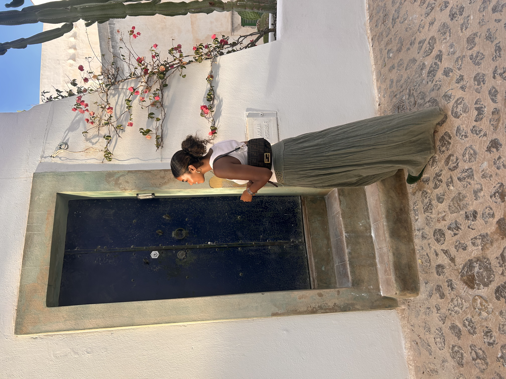
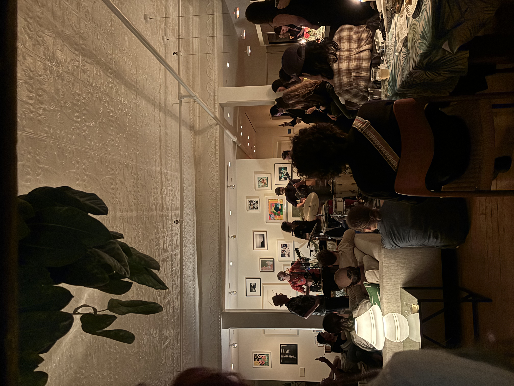
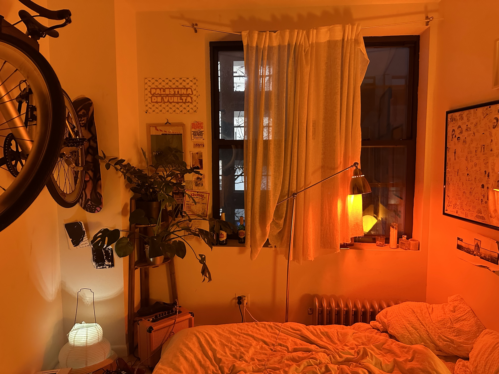

001
002
003
004
005
006
007
008
009
This website is a collection of architectural photos I’ve taken around the world—from New York City to Napoli to Singapore—pulled straight from my camera roll. Each entry highlights a different element of architecture, like doors, windows, tiles, and more, and I even added a random image generator featuring some of my favorite shots. I’m not an architecture major, but I’ve always been drawn to the variety of design styles I come across, and when brainstorming this project I realized just how many architectural photos I’ve captured over the years. While many images focus purely on architecture, you’ll also find fun snapshots of me, my friends, and my family mixed in, staying true to the reality of my camera roll.